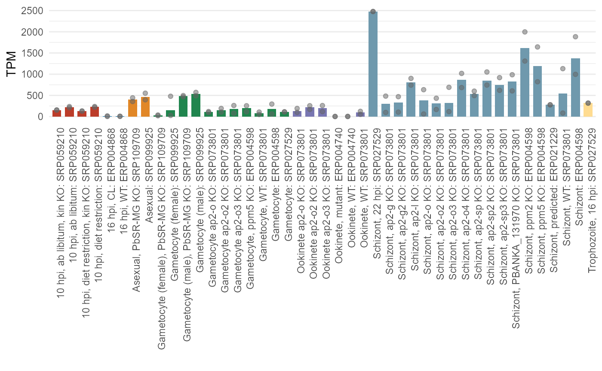

Introduction to plasmoRUtils
Rohit Satyam
King Abdullah University of Science & Technology, Saudi ArabiaAlberto Maillo
King Abdullah University of Science & Technology, Saudi ArabiaDavid Gomez-Cabrero
King Abdullah University of Science & Technology, Saudi ArabiaArnab Pain
King Abdullah University of Science & Technology, Saudi Arabia20 July, 2025
Introduction_to_plasmoRUtils.RmdAbstract
The package plasmoRUtils is designed to enable
users to access various Plasmodium and
Apicomplexan-related databases through single-line R functions. It
also provides convenience functions for rapid analysis.
Installation
Before downloading the package, install the following dependencies.
cranpkgs <- c('BiocManager','randomcoloR', 'janitor', 'readr', 'rlang', 'dplyr', 'ggsci', 'rvest', 'easyPubMed', 'plyr', 'scales', 'ggplot2', 'glue', 'tidyr', 'tibble', 'data.table', 'plotly', 'purrr', 'stringr', 'S4Vectors', 'echarts4r', 'magrittr', 'bio3d', 'httr', 'jsonlite', 'ggpubr', 'gt', 'mgsub', 'reshape2','pathfindR')
install.packages(setdiff(cranpkgs, rownames(installed.packages())), dependencies = TRUE)
biocpkgs <- c("rmarkdown","pRoloc","knitr","BiocStyle","DESeq2","styler","utils","IRanges","BiocGenerics","rtracklayer","scuttle","txdbmaker","topGO","drawProteins","GenomicFeatures","biomaRt","AnnotationForge","Biostrings","GenomeInfoDb","SingleCellExperiment","SingleR","NOISeq","GenomicRanges","BSgenome")
BiocManager::install(setdiff(biocpkgs, rownames(installed.packages())), dependencies = TRUE)The plasmoRUtils package is available on CRAN and can be installed as follows:
install.packages("plasmoRUtils")
# Once installed load the library as
library(plasmoRUtils)
## To re-check if all the dependencies that are required by plasmoRUtils are installed
install_dependencies()Introduction
Using plasmoRUtils, users can fetch data from VEuPathDB and its 12 component sites databases (VEuPathDBs) and transform it into formats compatible with other R packages in a straightforward manner. Data tables (both preconfigured and user-configured) can be downloaded from VEuPathDBs directly within R/RStudio, thanks to a variety of R functions and the RESTful API provided by VEuPathDBs.
For databases that lack APIs, we developed database-specific “searchX” functions (where X represents the database) that utilize the rvest package for web crawling to retrieve data, which is then transformed into tables that can be saved and shared. Additionally, we created a function to enable programmatic access to the MPMP database for the first time, allowing users to download and share data tables at their convenience. The package also provides several other data sets that we reanalyzed using the latest annotations from VEuPathDBs that can be used by various functions.
Databases covered includes:
- HitPredict
- ApicoTFDB
- Malaria.tools
- Malaria Parasite Metabolic Pathways (MPMP) database
- Malaria Important Interacting Proteins (MIIP)
- Phenoplasm
- PlasmoBase
- Uniprot
- Malaria Cell Atlas, etc. For exhaustive list, see subsections below.
# Load package and some other useful packages by using
suppressPackageStartupMessages(
suppressWarnings({
library(plasmoRUtils)
library(dplyr)
library(plyr)}))Accessing databases with plasmoRUtils search functions
plasmoRUtils package have several search function to fetch information from databases. The functions are tabulated below:
| Function | Database Access |
|---|---|
searchApicoTFdb() |
ApicoTFdb |
searchGSC() |
Google Scholar |
searchHP() |
Hit Predict |
searchIpDb() |
InParanoiDb |
searchKipho() |
KiPho Database |
searchMT() |
Malaria Tools |
searchMidb() |
Minor Intron Database |
searchMiip() |
Malaria Important Interacting Proteins |
searchPM() |
PubMed |
searchPhPl() |
PhenoPlasm |
searchTedConsensus() |
The Encyclopedia of Domains |
searchApidoTFdb()
This function helps user fetch the all the transcription factors for a particular apicomplexan of interest from ApicoTFDb(Sardar et al. 2019). For ease of usage the organism names have been abbreviated as follows in the Table below:
| Category | Abbreviation | Species |
|---|---|---|
| Plasmodium Species | pb | Plasmodium berghii |
| pv | Plasmodium vivax | |
| pf | Plasmodium falciparum | |
| pk | Plasmodium knowlesi | |
| py | Plasmodium yoelii | |
| pc | Plasmodium chabaudi | |
| Other Apicomplexan | tg49 | Toxoplasma Gondii ME49 |
| tg89 | Toxoplasma Gondii P89 | |
| cp | Cryptosporidium parvum | |
| em | Eimeria maxima | |
| bb | Babesia bovis | |
| et | Eimeria tenella | |
| nu | Neospora caninum | |
| cy | Cyclospora cayetanensis |
Using the function is relatively easy and can be achieved as
## Searching all plasmodium TFs
searchApicoTFdb(org="pf") %>% head()
#> # A tibble: 6 × 4
#> `Gene ID` `Protein Length` `Product Description` `TF- Family`
#> <chr> <chr> <chr> <chr>
#> 1 PF3D7_1319600 1633 ACDC domain-containing protein, p… AP2
#> 2 PF3D7_0604100 1979 AP2 domain transcription factor AP2
#> 3 PF3D7_1222400 2558 AP2 domain transcription factor AP2
#> 4 PF3D7_1222600 2432 AP2 domain transcription factor A… AP2
#> 5 PF3D7_1408200 1702 AP2 domain transcription factor A… AP2
#> 6 PF3D7_1007700 1597 AP2 domain transcription factor A… AP2
## Searching all cyclospora TFs
searchApicoTFdb(org="tg49") %>% head()
#> # A tibble: 6 × 4
#> `Gene ID` `Product Description` `Protein Length` `TF- Family`
#> <chr> <chr> <chr> <chr>
#> 1 TGME49_200385 Myb family DNA-binding domain-con… 2258 Myb/SANT
#> 2 TGME49_201220 zinc finger protein 603 BBOX
#> 3 TGME49_201790 FHA domain-containing protein 556 FHA
#> 4 TGME49_202690 DNA-directed RNA polymerase II RP… 250 General-TF
#> 5 TGME49_202840 FHA domain-containing protein 1044 FHA
#> 6 TGME49_202900 zinc finger (CCCH type) motif-con… 1298 Zn-Finger
searchGSC()
Sometimes, it is difficult to keep track of the corpus while you are
working on your gene of interest and you might want to keep up with your
competing groups across the globe. searchGSC() function can
help you collect all the necessary literature where your gene ID of
interest has been mentioned and return the results in form of a data
frame.
Since Google Scholar searches are not restricted to the Article abstracts but extends till supplementary section, this function can be very helpful to capture articles that mentions your gene ID of interest and are otherwise missed by normal Google search. Besides, since most of the pre-print literature is indexed at Google Scholar, you can also find papers by your competing groups that are yet to be peer-reviewed.
Note: We would like to warn users that this function is experimental and have been seen to get your IP blocked temporarily for 24 hrs if used more than 20 times. For large array of genes, we encourage users to use more specialized APIs.
## Searching all plasmodium TFs
searchGSC(c("PF3D7_0420300", "PF3D7_0621000"))
#> # A tibble: 14 × 5
#> GeneID Title Year Url Authors
#> <chr> <chr> <chr> <chr> <chr>
#> 1 PF3D7_0420300 Plasmodium malariae and ovale genomes prov… 2017 http… C Newb…
#> 2 PF3D7_0420300 Changes in genome organization of parasite… 2018 http… EM Bun…
#> 3 PF3D7_0420300 Transcriptomics and proteomics reveal two … 2019 http… SE Lin…
#> 4 PF3D7_0420300 The RNA structurome in the asexual blood s… 2021 http… DR Alv…
#> 5 PF3D7_0420300 The Transcription Factor PfAP2-O Influence… 2021 http… EFG Cu…
#> 6 PF3D7_0621000 The roles of plasmepsins IX and X in malar… 2021 http… AS Nas…
#> 7 PF3D7_0420300 Investigation of Plasmodium falciparum mit… 2022 http… S Dass
#> 8 PF3D7_0621000 An Insight to Further Malaria Vaccine Deve… 2023 http… A Berry
#> 9 PF3D7_0621000 Coordination of apicoplast transcription i… 2023 http… Y Koba…
#> 10 PF3D7_0420300 Systematic in vitro evolution in Plasmodiu… 2024 http… MR Lut…
#> 11 PF3D7_0420300 A Plasmodium falciparum MORC protein compl… 2024 http… MK Sin…
#> 12 PF3D7_0420300 Transcriptome analysis reveals a de novo D… 2025 http… A Okaf…
#> 13 PF3D7_0420300 Genome-wide gene expression profiles throu… 2025 http… G Zang…
#> 14 PF3D7_0621000 Advancing Functional Genomics in P. falcip… 2025 http… ST Win…
searchHP()
This function enables you to search HitPredict(López, Nakai, and Patil
2015) database and procure high-confidence Protein-Protein
interactions(PPI) for your organism of interest. All it requires is a
gene ID and taxon ID. HitPredict database provides PPI data in form of
Uniprot IDs which are not always ideal for apicomplexan biologists.
Therefore, we provide functionality to convert these Uniprot IDs back to
gene IDs by setting uniprotToGID=TRUE . Since the only
apicomplexan in HitPredict is
Plasmodium falciparum this gene ID mapping
conversion functionality is only limited for Plasmodium. It should be
turned off, when using it for non-apicomplexan organism as shown
below.
## Single gene query
searchHP("PF3D7_0418300") %>% head()
#> Interactor Interaction Name Experiments Category Method.Score
#> 1 A0A5K1K7X4 46953 A0A5K1K7X4 1 High-throughput 0.35
#> 2 C0H4E0 82953 C0H4E0 1 High-throughput 0.39
#> 3 C0H4U4 83025 C0H4U4 1 High-throughput 0.39
#> 4 C0H586 83100 C0H586 1 High-throughput 0.39
#> 5 C0H5G3 83162 C0H5G3 1 High-throughput 0.39
#> 6 Q8I398 1211124 Q8I398 1 High-throughput 0.49
#> Annotation.Score Interaction.Score Confidence QueryID ensembl_gene_id
#> 1 0.16 0.238 Low PF3D7_0418300 <NA>
#> 2 0.16 0.251 Low PF3D7_0418300 PF3D7_0515400
#> 3 0.16 0.251 Low PF3D7_0418300 PF3D7_0813300
#> 4 0.16 0.251 Low PF3D7_0418300 PF3D7_0933200
#> 5 0.16 0.251 Low PF3D7_0418300 PF3D7_1341300
#> 6 0.16 0.282 High PF3D7_0418300 PF3D7_0905100
## To use it for other organism, turn off uniprotToGID and provide taxid of the organism
test <- searchHP("BRCA1",taxid = "9606" , uniprotToGID = FALSE)
## Multiple gene query
res <- lapply(c("PF3D7_0418300","PF3D7_1118500"), function(x){searchHP(x,uniprotToGID = FALSE)})%>% plyr::ldply()
res %>% tail()
#> Interaction Interactor Name Experiments Category Method.Score
#> 15 83162 C0H5G3 C0H5G3 1 High-throughput 0.39
#> 16 46953 A0A5K1K7X4 A0A5K1K7X4 1 High-throughput 0.35
#> 17 1211135 Q9U0N1 Q9U0N1 1 High-throughput 0.35
#> 18 1212791 Q8IJG6 Q8IJG6 1 High-throughput 0.49
#> 19 87015 C6KTD2 SET1 1 High-throughput 0.39
#> 20 1211131 Q8I1Q4 Q8I1Q4 1 High-throughput 0.49
#> Annotation.Score Interaction.Score Confidence QueryID
#> 15 0.16 0.251 Low PF3D7_0418300
#> 16 0.16 0.238 Low PF3D7_0418300
#> 17 0.16 0.238 Low PF3D7_0418300
#> 18 0.50 0.494 High PF3D7_1118500
#> 19 0.50 0.439 High PF3D7_1118500
#> 20 0.16 0.282 High PF3D7_1118500
## You can now use toGeneid function which uses PlasmoDB release 68 annotation to
## map the uniprot IDs back to the gene IDs
toGeneid(res$Interactor,from = "uniprot","ensembl") %>% full_join(., res, by = c("UniProt ID(s)" = "Interactor"))
#> # A tibble: 20 × 13
#> `Gene ID` `Product Description` `Gene Name or Symbol` `UniProt ID(s)`
#> <chr> <chr> <chr> <chr>
#> 1 PF3D7_0113000 glutamic acid-rich prote… GARP Q9U0N1
#> 2 PF3D7_0418300 conserved Plasmodium pro… N/A Q8I1Q4
#> 3 PF3D7_0515400 conserved protein, unkno… N/A C0H4E0
#> 4 PF3D7_0526800 conserved Plasmodium pro… N/A Q8I3J7
#> 5 PF3D7_0532100 early transcribed membra… ETRAMP5 A0A5K1K7X4
#> 6 PF3D7_0629700 SET domain protein, puta… SET1 C6KTD2
#> 7 PF3D7_0802000 glutamate dehydrogenase,… GDH3 Q8IAM0
#> 8 PF3D7_0813300 NPL domain-containing pr… N/A C0H4U4
#> 9 PF3D7_0825500 protein KRI1, putative KRI1 Q8IB88
#> 10 PF3D7_0905100 nucleoporin NUP221, puta… NUP221 Q8I398
#> 11 PF3D7_0933200 calcyclin-binding protei… N/A C0H586
#> 12 PF3D7_1023900 chromodomain-helicase-DN… CHD1 Q8IJG6
#> 13 PF3D7_1023900 chromodomain-helicase-DN… CHD1 Q8IJG6
#> 14 PF3D7_1112100 protein kinase, putative N/A Q8IIP2
#> 15 PF3D7_1118500 nucleolar protein 56, pu… NOP56 Q8III3
#> 16 PF3D7_1228600 merozoite surface protei… MSP9 Q8I5D2
#> 17 PF3D7_1302700 ATP-dependent RNA helica… N/A Q8IET8
#> 18 PF3D7_1309400 HORMA domain protein, pu… N/A Q8IEM0
#> 19 PF3D7_1341300 60S ribosomal protein L1… N/A C0H5G3
#> 20 PF3D7_1468100 MORC family protein MORC Q8IKF6
#> # ℹ 9 more variables: Interaction <int>, Name <chr>, Experiments <int>,
#> # Category <chr>, Method.Score <dbl>, Annotation.Score <dbl>,
#> # Interaction.Score <dbl>, Confidence <chr>, QueryID <chr>Another scenario where users might be interested in setting
uniportToGID=FALSE might be when they are querying
thousands of IDs. Since ID conversion is carried out using biomaRt,
it might be redundant to convert same Uniprot ID multiple times if it
has multiple interacting partners.
For convenience, we therefore provide another function
toGeneid() which will quickly converts the Uniprot IDs back
to Ensembl IDs.
searchIpDb()
This function enables you to search InParanoiDB 9 (Persson and Sonnhammer 2023) database and procure high-confidence orthologs for your organism of interest. The input required is a character vector of gene IDs.
gids <- c("PF3D7_0807800", "PF3D7_1023900")
searchIpDb(gids) %>% head()
#> success Q8IAR6
#> success Q8IJG6
#> Group ID Species Protein Gene Name
#> 1 826 Perkinsus marinus C5LD32 Pmar_PMAR029539
#> 2 826 Perkinsus marinus C5L7W9 Pmar_PMAR009653
#> 3 826 Plasmodium falciparum Q8IAR6 PF3D7_0807800
#> 4 1814 Plasmodium falciparum Q8IAR6 PF3D7_0807800
#> 5 1814 Plasmodium vivax A5KAC7 PVX_088150
#> 6 706 Cyclospora cayetanensis A0A1D3D0U4 cyc_02495
#> Bitscore info_outline Inparalog Score info_outline Seed Score info_outline
#> 1 126 1.000 1.0
#> 2 126 0.397 -
#> 3 126 1.000 1.0
#> 4 515 1.000 1
#> 5 515 1.000 1
#> 6 179 1.000 1
#> Description queryid
#> 1 26S Proteasome Non-Atpase Regulatory Subunit, Putative PF3D7_0807800
#> 2 26S Proteasome Non-Atpase Regulatory Subunit, Putative PF3D7_0807800
#> 3 26S Proteasome Regulatory Subunit Rpn10, Putative PF3D7_0807800
#> 4 26S Proteasome Regulatory Subunit Rpn10, Putative PF3D7_0807800
#> 5 26S Proteasome Non-Atpase Regulatory Subunit 4, Putative PF3D7_0807800
#> 6 Ubiquitin Interaction Motif Family Protein PF3D7_0807800You might see some of the Uniprot ID failing such as
Q2KNU4 and Q2KNU5 and their respective URLs.
These Uniprot IDs are missing from the InParanoiDB 9 database.
searchKipho()
This functions let you fetch the Malaria Parasite Kinome-Phosphatome Resource (KiPho) database (Pandey, Kumar, and Gupta 2017) without leaving R. The organism in KiPho includes (see below):
| Abbreviation | Species |
|---|---|
| pb | Plasmodium berghii |
| pv | Plasmodium vivax |
| pf | Plasmodium falciparum |
| pc | Plasmodium chabaudi |
Beside the organism, user needs to specify type="kinase"
to fetch the Kinome and "type=phosphatase" to fetch
Phosphatome.
searchKipho(org="pf",type = "kinase")
#> # A tibble: 148 × 7
#> `Gene ID` `Previous ID(s)` `Product Description` `Protein Length`
#> <chr> <chr> <chr> <int>
#> 1 PF3D7_0102600 "PFA0130c MAL1P1.17" serine/threonine protei… 630
#> 2 PF3D7_0103700 "PFA0185w MAL1P1.23" L-seryl-tRNA(Sec) kinas… 535
#> 3 PF3D7_0107600 "PFA0380w\tMAL1P2.04" serine/threonine protei… 1595
#> 4 PF3D7_0110600 "PFA0515w\tMAL1P2.32" phosphatidylinositol-4-… 1710
#> 5 PF3D7_0110900 "PFA0530c\tMAL1P2.35" adenylate kinase-like p… 186
#> 6 PF3D7_0111500 "PFA0555c\tMAL1P2.40" UMP-CMP kinase, putative 371
#> 7 PF3D7_0203100 "PFB0150c\tPF02_0030" protein kinase, putative 2485
#> 8 PF3D7_0211700 "PFB0520w\tPF02_0109" tyrosine kinase-like pr… 1233
#> 9 PF3D7_0213400 "PFB0605w\tPF02_0125" protein kinase 7 (PK7) 343
#> 10 PF3D7_0214600 "PFB0665w\tPF02_0137" serine/threonine protei… 1714
#> # ℹ 138 more rows
#> # ℹ 3 more variables: `Conserved Protein Domain Family(Accession No)` <chr>,
#> # `Conserved Protein Domain Family(Name)` <chr>, `Ortholog Group` <chr>
searchKipho(org="pf",type = "phosphatase")
#> # A tibble: 70 × 7
#> `Gene ID` `Previous ID(s)` `Product Description` `Protein Length`
#> <chr> <chr> <chr> <int>
#> 1 PF3D7_0107200 "PFA0350w\tMAL1P1.64" carbon catabolite repre… 337
#> 2 PF3D7_0107800 "PFA0390w" double-strand break rep… 1233
#> 3 PF3D7_0303200 "PFC0150w" HAD superfamily protein… 1162
#> 4 PF3D7_0305600 "PFC0250c" AP endonuclease (DNA-[a… 617
#> 5 PF3D7_0309000 "PFC0380w" dual specificity protei… 575
#> 6 PF3D7_0310300 "PFC0430w" phosphoglycerate mutase… 1165
#> 7 PF3D7_0314400 "PFC0595c" serine/threonine protei… 308
#> 8 PF3D7_0319200 "PFC0850c" endonuclease/exonucleas… 906
#> 9 PF3D7_0322100 "PFC0980c" RNA triphosphatase (Prt… 591
#> 10 PF3D7_0410300 "PFD0505c\tPFD0510c" protein phosphatase PPM… 906
#> # ℹ 60 more rows
#> # ℹ 3 more variables: `Conserved Protein Domain Family(Accession_No)` <chr>,
#> # `Conserved Protein Domain Family(Name)` <chr>, `Ortholog Group` <chr>
searchMT()
This function enables you to find the Condition Specific and Tissue Specific expression of gene of interest in two organisms: Plasmodium falciparum and Plasmodium berghi.
geneID <- c("PBANKA_0100600", "PBANKA_0102900", "PF3D7_0102900")
res <- searchMT(geneID = geneID)
res
# To get overview of stages your genes of interest are highly expressed in. Commented here as the html plot disrupts the HTML vignette rendering.
# res %>% easyPie()You can also feed the output of searchMT() to a
companion function to quickly get a sense of the stages in which your
genes of interests are highly expressed in. Another convenience function
for malaria.tools database is plotAllCondition() function.
This let you create publication ready plots of TPM normalized expression
values across multiple stages of parasite using bulk-rnaseq data from
malaria.tools. These plots are similar to what you see in the database
itself.
# TPM plot (non-interactive)
plotAllCondition(geneID = "PBANKA_0100600")
plotAllCondition(geneID = "PBANKA_0100600",plotify = TRUE) ## interactive
## To get the data used for making above plot use returnData argument
plotAllCondition(geneID = "PBANKA_0100600",returnData = TRUE) %>% head()
#> condition mean min max group
#> 1 Asexual: SRP099925 460.6603 396.042 551.808 Asexual
#> 2 Asexual, PbSR-MG KO: SRP109709 403.1830 355.452 442.661 Asexual
#> 3 10 hpi, ab libitum: SRP059210 224.5177 206.967 236.912 10
#> 4 10 hpi, diet restriction: SRP059210 228.0705 218.048 238.093 10
#> 5 10 hpi, ab libitum, kin KO: SRP059210 155.0550 155.055 155.055 10
#> 6 10 hpi, diet restriction, kin KO: SRP059210 130.9310 130.931 130.931 10Users can also plot stage specific average TPMs as well similar to
the plots rendered in malaria.tools using
plotStageSpecific() function.
plotStageSpecific(geneID = "PBANKA_0100600",plotify = TRUE)
searchMidb()
This function enables you to fetch minor-introns information from MiDB database in bulk. By default, all intron classes are fetched (major-like, major_hybrid, minor-like, minor_hybrid, non-canonical). For more information on minor introns visit MiDB database.
## Let's see what organisms are present in MiDB
data("midbSpecies")
df <- searchMidb("Toxoplasma gondii ME49")
df %>% head()
#> # A tibble: 6 × 43
#> gene_symbol ensembl_gene_id transcript_key intron_name intron_start intron_end
#> <chr> <chr> <chr> <chr> <dbl> <dbl>
#> 1 NULL TGME49_200010 TGME49_200010… Toxoplasma… 2247210 2247553
#> 2 NULL TGME49_200290 TGME49_200290… Toxoplasma… 6776668 6776934
#> 3 NULL TGME49_200295 TGME49_200295… Toxoplasma… 6783452 6783939
#> 4 NULL TGME49_200295 TGME49_200295… Toxoplasma… 6782107 6782402
#> 5 NULL TGME49_200300 TGME49_200300… Toxoplasma… 6786183 6786931
#> 6 NULL TGME49_200320 TGME49_200320… Toxoplasma… 6796988 6797499
#> # ℹ 37 more variables: term_nt <chr>, `5ss_seq` <chr>, `3ss_seq` <chr>,
#> # U2_BPS <chr>, U12_BPS <chr>, `5ss_class` <dbl>, `3ss_class` <chr>,
#> # intron_class <chr>, flanking_aa <chr>, intron_aa_position <chr>,
#> # intron_phase <chr>, intron_rank <dbl>, major_5ss_score <dbl>,
#> # major_5ss_LOD <dbl>, major_5ss_LOD_stdev <dbl>, major_5ss_match <dbl>,
#> # major_5ss_match_stdev <dbl>, minor_5ss_score <dbl>, minor_5ss_LOD <dbl>,
#> # minor_5ss_LOD_stdev <dbl>, minor_5ss_match <dbl>, …
searchMiip()
This function enables you to fetch Protein-protein interaction pairs of Plasmodium falciparum and the respective stage (sexual and asexual) they interact from MIIP database.
searchMiip(c("PF3D7_0807800","PF3D7_1023900"))
#> # A tibble: 4 × 5
#> interactorA descriptionA interactorB descriptionB stage
#> <chr> <chr> <chr> <chr> <chr>
#> 1 PF3D7_0807800 26S proteasome regulatory subuni… PF3D7_0710… conserved P… game…
#> 2 PF3D7_1023900 chromodomain-helicase-DNA-bindin… PF3D7_1014… protein KIC8 game…
#> 3 PF3D7_1023900 chromodomain-helicase-DNA-bindin… PF3D7_1138… protein KIC5 ring
#> 4 PF3D7_1335100 merozoite surface protein 7 PF3D7_1023… chromodomai… schi…
searchPM()
Aside from searchGSC you can also use
searchPM() to fetch literature information where your gene
IDs of interest have been mentioned. This will however limit the search
to title abstract and keywords. In the background, it makes use of
easyPubMed() functions such as get_pubmed_ids
and articles_to_list and then transforms the output in form
of a table that is easy explore
searchPM(geneID = c("PF3D7_0420300","PF3D7_0621000"))
#> PubMed Query used for PF3D7_0420300 was:
#> "Plasmodium falciparum"[All Fields] AND "PF3D7_0420300"[Title/Abstract:~0] AND 2010/01/01:2025/12/31[Date - Publication]
#> pmid doi
#> 1 39412522 10.7554/eLife.92201
#> 2 30526479 10.1186/s12864-018-5257-x
#> title
#> 1 A Plasmodium falciparum MORC protein complex modulates epigenetic control of gene expression through interaction with heterochromatin.
#> 2 Schizont transcriptome variation among clinical isolates and laboratory-adapted clones of the malaria parasite Plasmodium falciparum.
#> year month day jabbrv journal GeneID
#> 1 2024 10 16 Elife eLife PF3D7_0420300
#> 2 2019 03 18 BMC Genomics BMC genomics PF3D7_0420300Gene IDs for which no results are available will be shown on the
screen. However, when a query is successful, the function also prints
the exact query that can be used by you for reproducibility purposes.
This behavior can be turned off if you have a lot of gene IDs using
verbose=FALSE.
"Plasmodium falciparum"[All Fields] AND "PF3D7_0420300"[Title/Abstract:~0] AND 2010/01/01:2025/12/31[Date - Publication]
searchPhPl()
This convenience function allow users to fetch Disruptability and
Mutant Phenotypes tables for gene of interest from PhenoPlasm database.
fetch=1 helps fetch the Disruptability and
fetch=2 helps fetch the Mutant Phenotype table.
searchPhPl(geneID = c("PF3D7_0420300","PF3D7_0621000","PF3D7_0523800"), org="pf") %>% head()
#> Species Disruptability Reference
#> 1 P. falciparum 3D7 Refractory USF piggyBac screen (Insert. mut.)
#> 2 P. falciparum 3D7 Refractory USF piggyBac screen (Insert. mut.)
#> 3 P. falciparum 3D7 Refractory 354041168 ko attempts failed
#> Submitter QueryGID
#> 1 USF PiggyBac Screen PF3D7_0621000
#> 2 USF PiggyBac Screen PF3D7_0523800
#> 3 Theo Sanderson, Francis Crick Institute PF3D7_0523800
searchPhPl(geneID = c("PF3D7_0420300","PF3D7_0621000","PF3D7_0523800"), org="pf", fetch=2) %>% head()
#> # A tibble: 1 × 6
#> Species Stage Phenotype Reference Submitter QueryGID
#> <chr> <chr> <chr> <chr> <chr> <chr>
#> 1 P. falciparum 3D7 Asexual Difference from wild-t… "PMID 39… Paul Sig… PF3D7_0…Oftentime, you would like to get the summary table like the one
plotted in PhenoPlasm that combines both Disruptability and Mutant
Phenotype information. Rather than using screen grab to get the snapshot
of the table, one can now download the table from Advanced Search
button by submitting the geneIDs of interest and can feed that file to
easyPhplplottbl() function of plasmoRUtils to
render such table from the phenotype.txt files directly
# Read the file
df <- read.csv("phenotype.txt", skip = 2, sep = "\t") %>%
dplyr::select(-3, -4) %>% #remove the empty cols: GeneLocalisation and OrthologLocalisation
dplyr::rename_with(~ gsub("Sprozoite", "Sporozoite", .x)) #Correct the colnames
easyPhplplottbl(df)
## Or you can pass the file path directly
easyPhplplottbl("phenotype.txt")
#Load sample data (subset of genes from phenotype.txt file above)
data(pf3d7PhplTable)
easyPhplplottbl(pf3d7PhplTable)| Gene | Asexual | Gametocyte | Liver | Oocyte | Ookinete | Sporozoite | Viability |
|---|---|---|---|---|---|---|---|
| PF3D7_0105200 | ❌ | ✔ ❌ | |||||
| PF3D7_0105300 | ✅ | ✅ | ❗ | ❗ | ✅ | ❗ | ❌ ✔ |
| PF3D7_0105400 | ❗ | ✔ | |||||
| PF3D7_0217500 | ⟴ 🟥 ✅ | ❗ | ❗ | ❌ ✔ ❌ | |||
| PF3D7_1337800 | ❗ 🟥 ❗ | ❌ ❌ |
Windows users might face issues saving these plots as pdf directly in which case, the tables can be saved as HTML files which can then be converted to SVG or PDF formats using various online converters to combine them with other plots.
Note: As per Phenotype taxonomy of Phenoplasm, the database uses “D” for both
Difference from wild-typeandEgress defectwhich is confusing and difficult to resolve programmatically. An example of this isPF3D7_1337800that have “D S D” in the “Gene Asexual”. While we have requested the database maintainer to fix this, please watch out for borderline cases like these.
searchTedConsensus()
This function helps users fetch the domain information from
The Encyclopedia of Domains database given set of
uniprot IDs. Usually these table contains a numeric CATH labels which
are difficult to comprehend and user has to click on them one by one to
find the domain name. We enable conversion of these CATH labels to
description using returnCATHdesc=TRUE. This will try to
scrap the labels for given CATH label from CATH database wherever
possible.
searchTedConsensus(c("Q7K6A1","Q8IAP8","C0H4D0","C6KT90","Q8IBJ7"), returnCATHdesc=FALSE)
#> ted_id uniprot_acc md5_domain
#> 1 AF-Q7K6A1-F1-model_v4_TED01 Q7K6A1 b99e920f0ded31aa96af0ef9be1338f4
#> 2 AF-C0H4D0-F1-model_v4_TED01 C0H4D0 cd912dcbbb5d070cbb254c0a88278fe4
#> 3 AF-C6KT90-F1-model_v4_TED02 C6KT90 70d20592d9f682bff23dc6188f318244
#> 4 AF-C6KT90-F1-model_v4_TED01 C6KT90 7cc174ebefe723733b6e63508fd23a9e
#> 5 AF-Q8IBJ7-F1-model_v4_TED01 Q8IBJ7 71697d50571d5fe2331a13ff16503478
#> consensus_level chopping nres_domain num_segments plddt
#> 1 high 6-376 371 1 97.1740
#> 2 medium 55-153 99 1 88.9028
#> 3 medium 322-382 61 1 45.3118
#> 4 medium 172-203 32 1 48.8553
#> 5 medium 54-88 35 1 87.3500
#> num_helix_strand_turn num_helix num_strand num_helix_strand num_turn
#> 1 60 16 8 24 35
#> 2 15 5 4 9 6
#> 3 3 3 0 3 0
#> 4 2 1 0 1 1
#> 5 5 0 3 3 2
#> proteome_id cath_label cath_assignment_level cath_assignment_method
#> 1 36329 3.40.800.20 H foldseek
#> 2 36329 3.30.70.2380 H foldseek
#> 3 36329 4.10.860 T foldclass
#> 4 36329 1.20.5 T foldclass
#> 5 36329 - - -
#> packing_density norm_rg tax_common_name tax_scientific_name
#> 1 13.064 0.298 Plasmodium falciparum (isolate 3D7)
#> 2 12.537 0.306 Plasmodium falciparum (isolate 3D7)
#> 3 9.900 0.374 Plasmodium falciparum (isolate 3D7)
#> 4 8.900 0.403 Plasmodium falciparum (isolate 3D7)
#> 5 9.833 0.370 Plasmodium falciparum (isolate 3D7)
#> tax_lineage
#> 1 cellular organisms, Eukaryota, Sar, Alveolata, Apicomplexa, Aconoidasida, Haemosporida, Plasmodiidae, Plasmodium, Plasmodium (Laverania), Plasmodium falciparum
#> 2 cellular organisms, Eukaryota, Sar, Alveolata, Apicomplexa, Aconoidasida, Haemosporida, Plasmodiidae, Plasmodium, Plasmodium (Laverania), Plasmodium falciparum
#> 3 cellular organisms, Eukaryota, Sar, Alveolata, Apicomplexa, Aconoidasida, Haemosporida, Plasmodiidae, Plasmodium, Plasmodium (Laverania), Plasmodium falciparum
#> 4 cellular organisms, Eukaryota, Sar, Alveolata, Apicomplexa, Aconoidasida, Haemosporida, Plasmodiidae, Plasmodium, Plasmodium (Laverania), Plasmodium falciparum
#> 5 cellular organisms, Eukaryota, Sar, Alveolata, Apicomplexa, Aconoidasida, Haemosporida, Plasmodiidae, Plasmodium, Plasmodium (Laverania), Plasmodium falciparum
searchTedConsensus(c("Q7K6A1","Q8IAP8","C0H4D0","C6KT90","Q8IBJ7"), returnCATHdesc=TRUE)
#> ted_id uniprot_acc md5_domain
#> 1 AF-Q7K6A1-F1-model_v4_TED01 Q7K6A1 b99e920f0ded31aa96af0ef9be1338f4
#> 2 AF-C0H4D0-F1-model_v4_TED01 C0H4D0 cd912dcbbb5d070cbb254c0a88278fe4
#> 3 AF-C6KT90-F1-model_v4_TED02 C6KT90 70d20592d9f682bff23dc6188f318244
#> 4 AF-C6KT90-F1-model_v4_TED01 C6KT90 7cc174ebefe723733b6e63508fd23a9e
#> 5 AF-Q8IBJ7-F1-model_v4_TED01 Q8IBJ7 71697d50571d5fe2331a13ff16503478
#> consensus_level chopping nres_domain num_segments plddt
#> 1 high 6-376 371 1 97.1740
#> 2 medium 55-153 99 1 88.9028
#> 3 medium 322-382 61 1 45.3118
#> 4 medium 172-203 32 1 48.8553
#> 5 medium 54-88 35 1 87.3500
#> num_helix_strand_turn num_helix num_strand num_helix_strand num_turn
#> 1 60 16 8 24 35
#> 2 15 5 4 9 6
#> 3 3 3 0 3 0
#> 4 2 1 0 1 1
#> 5 5 0 3 3 2
#> proteome_id cath_label cath_assignment_level cath_assignment_method
#> 1 36329 3.40.800.20 H foldseek
#> 2 36329 3.30.70.2380 H foldseek
#> 3 36329 4.10.860 T foldclass
#> 4 36329 1.20.5 T foldclass
#> 5 36329 - - -
#> packing_density norm_rg tax_common_name tax_scientific_name
#> 1 13.064 0.298 Plasmodium falciparum (isolate 3D7)
#> 2 12.537 0.306 Plasmodium falciparum (isolate 3D7)
#> 3 9.900 0.374 Plasmodium falciparum (isolate 3D7)
#> 4 8.900 0.403 Plasmodium falciparum (isolate 3D7)
#> 5 9.833 0.370 Plasmodium falciparum (isolate 3D7)
#> tax_lineage
#> 1 cellular organisms, Eukaryota, Sar, Alveolata, Apicomplexa, Aconoidasida, Haemosporida, Plasmodiidae, Plasmodium, Plasmodium (Laverania), Plasmodium falciparum
#> 2 cellular organisms, Eukaryota, Sar, Alveolata, Apicomplexa, Aconoidasida, Haemosporida, Plasmodiidae, Plasmodium, Plasmodium (Laverania), Plasmodium falciparum
#> 3 cellular organisms, Eukaryota, Sar, Alveolata, Apicomplexa, Aconoidasida, Haemosporida, Plasmodiidae, Plasmodium, Plasmodium (Laverania), Plasmodium falciparum
#> 4 cellular organisms, Eukaryota, Sar, Alveolata, Apicomplexa, Aconoidasida, Haemosporida, Plasmodiidae, Plasmodium, Plasmodium (Laverania), Plasmodium falciparum
#> 5 cellular organisms, Eukaryota, Sar, Alveolata, Apicomplexa, Aconoidasida, Haemosporida, Plasmodiidae, Plasmodium, Plasmodium (Laverania), Plasmodium falciparum
#> cath_label_desc
#> 1 Histone deacetylase domain
#> 2
#> 3
#> 4
#> 5 NULLIn the example above, C0H4D0 have CATH label 3.30.70.2380.
But this superfamily doesn’t have a name. Besides, sometimes instead of
Superfamily CATH labels, TED might use CATH-Gene3D Hierarchy. No
description is returned in such cases.
Session Info
utils::sessionInfo()
#> R version 4.4.1 (2024-06-14 ucrt)
#> Platform: x86_64-w64-mingw32/x64
#> Running under: Windows 11 x64 (build 26100)
#>
#> Matrix products: default
#>
#>
#> locale:
#> [1] LC_COLLATE=English_India.utf8 LC_CTYPE=English_India.utf8
#> [3] LC_MONETARY=English_India.utf8 LC_NUMERIC=C
#> [5] LC_TIME=English_India.utf8
#>
#> time zone: Asia/Riyadh
#> tzcode source: internal
#>
#> attached base packages:
#> [1] stats graphics grDevices utils datasets methods base
#>
#> other attached packages:
#> [1] plyr_1.8.9 dplyr_1.1.4 plasmoRUtils_1.0.0 rlang_1.1.6
#> [5] readr_2.1.5 janitor_2.2.1 BiocStyle_2.32.1
#>
#> loaded via a namespace (and not attached):
#> [1] IRanges_2.38.1 dichromat_2.0-0.1
#> [3] vroom_1.6.5 progress_1.2.3
#> [5] vsn_3.72.0 nnet_7.3-19
#> [7] Biostrings_2.72.1 vctrs_0.6.5
#> [9] digest_0.6.37 png_0.1-8
#> [11] proxy_0.4-27 MSnbase_2.30.1
#> [13] echarts4r_0.4.5.9000 parallelly_1.45.0
#> [15] MASS_7.3-61 pkgdown_2.1.3
#> [17] reshape2_1.4.4 httpuv_1.6.16
#> [19] foreach_1.5.2 BiocGenerics_0.50.0
#> [21] withr_3.0.2 xfun_0.52
#> [23] ggpubr_0.6.1 survival_3.8-3
#> [25] memoise_2.0.1 hexbin_1.28.5
#> [27] ggsci_3.2.0 mixtools_2.0.0.1
#> [29] systemfonts_1.2.3 ragg_1.4.0
#> [31] gtools_3.9.5 easyPubMed_2.13
#> [33] Formula_1.2-5 prettyunits_1.2.0
#> [35] KEGGREST_1.44.1 promises_1.3.3
#> [37] httr_1.4.7 rstatix_0.7.2
#> [39] restfulr_0.0.16 globals_0.18.0
#> [41] ps_1.9.1 rstudioapi_0.17.1
#> [43] UCSC.utils_1.0.0 generics_0.1.4
#> [45] processx_3.8.6 curl_6.4.0
#> [47] ncdf4_1.24 S4Vectors_0.42.1
#> [49] zlibbioc_1.50.0 ScaledMatrix_1.12.0
#> [51] randomForest_4.7-1.2 bio3d_2.4-5
#> [53] GenomeInfoDbData_1.2.12 SparseArray_1.4.8
#> [55] xtable_1.8-4 stringr_1.5.1
#> [57] desc_1.4.3 doParallel_1.0.17
#> [59] evaluate_1.0.4 S4Arrays_1.4.1
#> [61] BiocFileCache_2.12.0 preprocessCore_1.66.0
#> [63] hms_1.1.3 GenomicRanges_1.56.2
#> [65] bookdown_0.43 irlba_2.3.5.1
#> [67] colorspace_2.1-1 filelock_1.0.3
#> [69] magrittr_2.0.3 snakecase_0.11.1
#> [71] later_1.4.2 viridis_0.6.5
#> [73] lattice_0.22-6 MsCoreUtils_1.16.1
#> [75] future.apply_1.20.0 SparseM_1.84-2
#> [77] XML_3.99-0.18 scuttle_1.14.0
#> [79] matrixStats_1.5.0 class_7.3-22
#> [81] pillar_1.11.0 nlme_3.1-166
#> [83] iterators_1.0.14 compiler_4.4.1
#> [85] beachmat_2.20.0 stringi_1.8.7
#> [87] gower_1.0.2 SummarizedExperiment_1.34.0
#> [89] dendextend_1.19.1 lubridate_1.9.4
#> [91] GenomicAlignments_1.40.0 drawProteins_1.24.0
#> [93] crayon_1.5.3 abind_1.4-8
#> [95] BiocIO_1.14.0 bit_4.6.0
#> [97] chromote_0.5.1 pcaMethods_1.96.0
#> [99] codetools_0.2-20 textshaping_1.0.1
#> [101] recipes_1.3.1 BiocSingular_1.20.0
#> [103] MLInterfaces_1.84.0 crosstalk_1.2.1
#> [105] bslib_0.9.0 e1071_1.7-16
#> [107] plotly_4.11.0 LaplacesDemon_16.1.6
#> [109] mime_0.13 MultiAssayExperiment_1.30.3
#> [111] splines_4.4.1 Rcpp_1.0.14
#> [113] dbplyr_2.5.0 sparseMatrixStats_1.16.0
#> [115] knitr_1.50 blob_1.2.4
#> [117] utf8_1.2.6 clue_0.3-66
#> [119] mzR_2.38.0 AnnotationFilter_1.28.0
#> [121] fs_1.6.6 QFeatures_1.14.2
#> [123] listenv_0.9.1 mzID_1.42.0
#> [125] DelayedMatrixStats_1.26.0 ggsignif_0.6.4
#> [127] tibble_3.3.0 Matrix_1.7-1
#> [129] statmod_1.5.0 tzdb_0.5.0
#> [131] lpSolve_5.6.23 pkgconfig_2.0.3
#> [133] tools_4.4.1 cachem_1.1.0
#> [135] RSQLite_2.4.1 viridisLite_0.4.2
#> [137] rvest_1.0.4 DBI_1.2.3
#> [139] impute_1.78.0 fastmap_1.2.0
#> [141] rmarkdown_2.29 scales_1.4.0
#> [143] grid_4.4.1 gt_1.0.0
#> [145] Rsamtools_2.20.0 broom_1.0.8
#> [147] sass_0.4.10 coda_0.19-4.1
#> [149] FNN_1.1.4.1 BiocManager_1.30.26
#> [151] graph_1.82.0 carData_3.0-5
#> [153] selectr_0.4-2 SingleR_2.6.0
#> [155] rpart_4.1.23 farver_2.1.2
#> [157] yaml_2.3.10 AnnotationForge_1.46.0
#> [159] MatrixGenerics_1.16.0 rtracklayer_1.64.0
#> [161] cli_3.6.5 purrr_1.0.4
#> [163] stats4_4.4.1 txdbmaker_1.0.1
#> [165] lifecycle_1.0.4 caret_7.0-1
#> [167] Biobase_2.64.0 mvtnorm_1.3-3
#> [169] lava_1.8.1 kernlab_0.9-33
#> [171] backports_1.5.0 BiocParallel_1.38.0
#> [173] annotate_1.82.0 timechange_0.3.0
#> [175] gtable_0.3.6 rjson_0.2.23
#> [177] parallel_4.4.1 pROC_1.18.5
#> [179] limma_3.60.6 jsonlite_2.0.0
#> [181] bitops_1.0-9 ggplot2_3.5.2
#> [183] bit64_4.6.0-1 pRoloc_1.44.1
#> [185] jquerylib_0.1.4 segmented_2.1-4
#> [187] timeDate_4041.110 lazyeval_0.2.2
#> [189] shiny_1.11.1 htmltools_0.5.8.1
#> [191] affy_1.82.0 GO.db_3.19.1
#> [193] rappdirs_0.3.3 glue_1.8.0
#> [195] httr2_1.2.0 XVector_0.44.0
#> [197] RCurl_1.98-1.17 MALDIquant_1.22.3
#> [199] mclust_6.1.1 gridExtra_2.3
#> [201] igraph_2.1.4 R6_2.6.1
#> [203] tidyr_1.3.1 SingleCellExperiment_1.26.0
#> [205] labeling_0.4.3 GenomicFeatures_1.56.0
#> [207] cluster_2.1.8 GenomeInfoDb_1.40.1
#> [209] ipred_0.9-15 DelayedArray_0.30.1
#> [211] tidyselect_1.2.1 ProtGenerics_1.36.0
#> [213] sampling_2.11 xml2_1.3.8
#> [215] car_3.1-3 AnnotationDbi_1.66.0
#> [217] future_1.58.0 ModelMetrics_1.2.2.2
#> [219] rsvd_1.0.5 affyio_1.74.0
#> [221] topGO_2.56.0 data.table_1.17.6
#> [223] websocket_1.4.4 mgsub_1.7.3
#> [225] htmlwidgets_1.6.4 RColorBrewer_1.1-3
#> [227] biomaRt_2.60.1 hardhat_1.4.1
#> [229] prodlim_2025.04.28 PSMatch_1.8.0